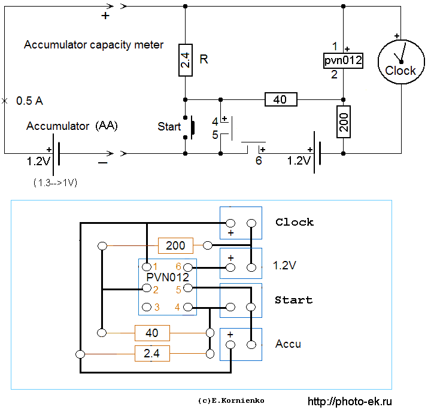
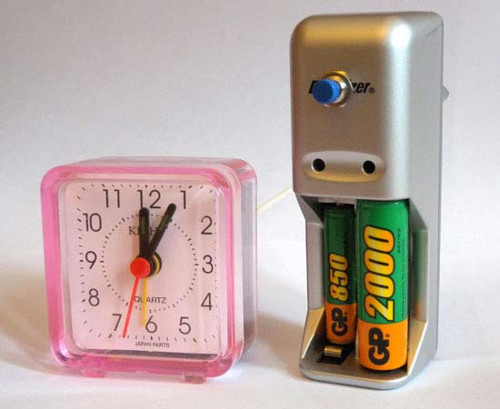
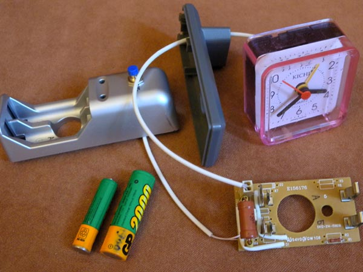

Accumulator capacity meter for AA cells

(description of the scheme)
Unlike the
Accu Capacity Meter
for
different types of cells, here
(1) there is no protection, which is needed for volage more
than 1.2v
(2) the resistor 2.4 ohm is placed within the device.
So the only external part of the accumulator measures is
a clock.
The resistor 2.4 ohm does the discharge current 500 ma. For accumulators of size AAA it is better to decrease the current to 200 ma. For this you may add to the scheme a resistor 6 ohm and add a switcher AA(2.4 ohm)/AAA(6 ohm).
These photos show the device in a case from a simple charger.
 